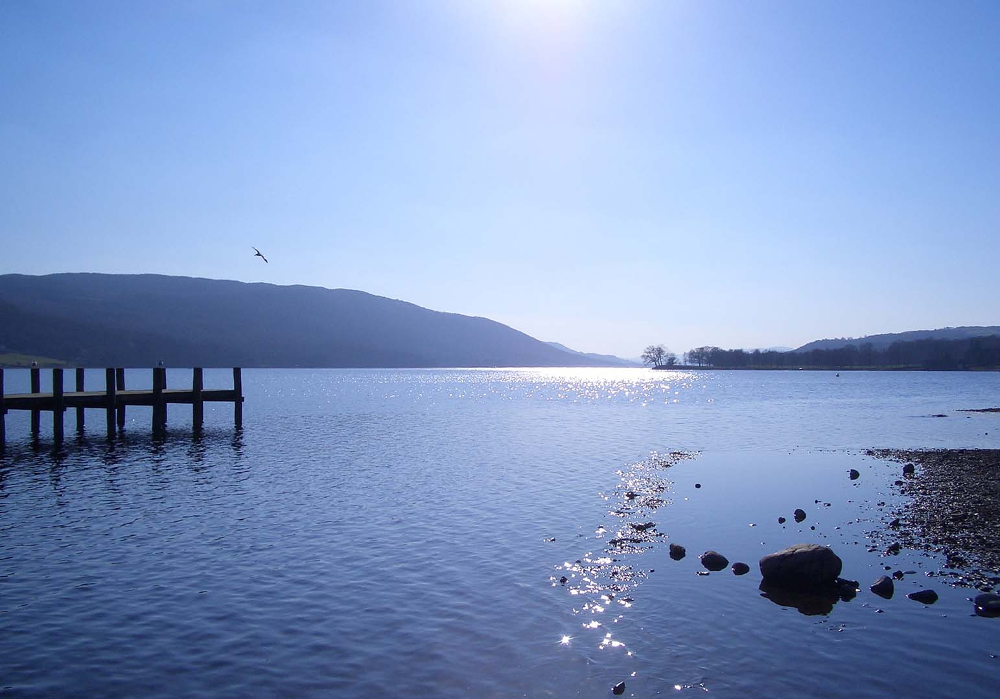
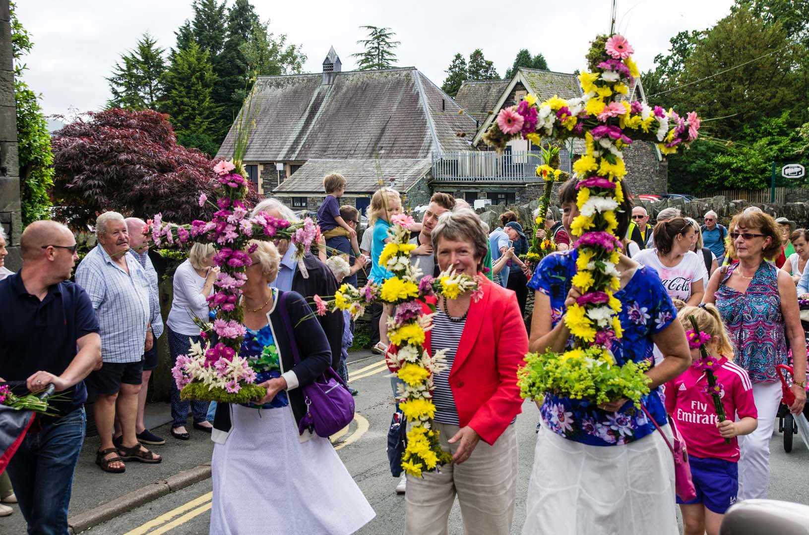
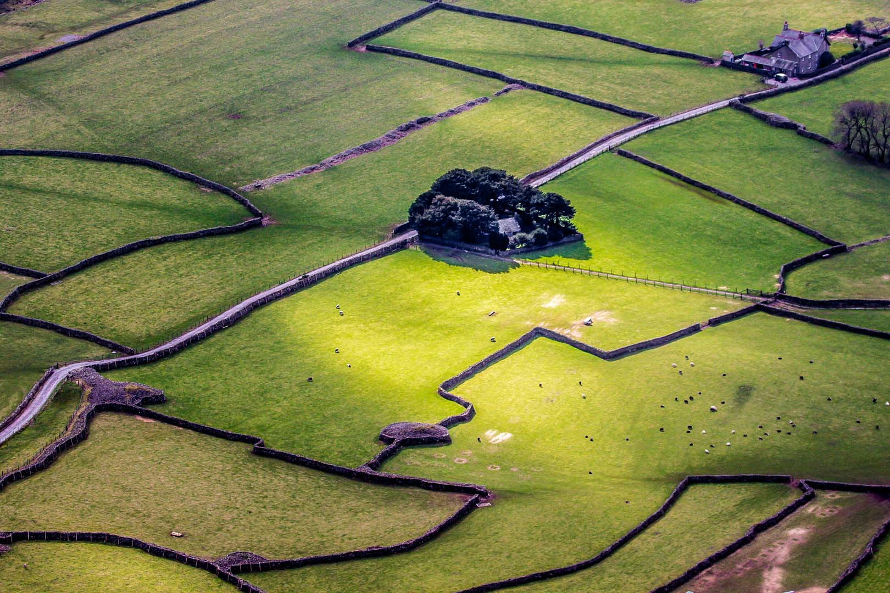
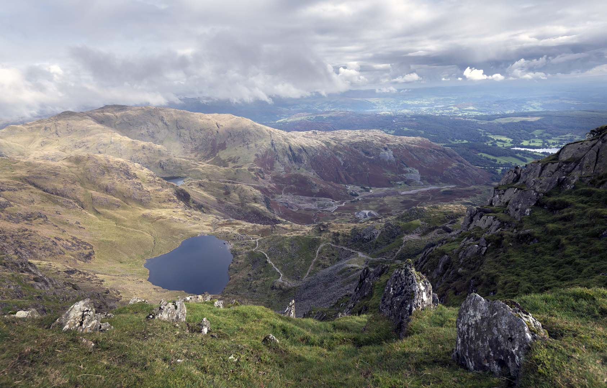

Nature projects
There are some fantastic nature projects taking place across the Lake District National Park. We work with nature protection and land management organisations to deliver projects that protect and restore this special landscape for future generations.
Wildlife Rich Habitat Fund
The Wildlife Rich Habitat Fund supports habitat creation and restoration work within the Lake District National Park.
We want to hear from landowners, organisations and communities who could create or restore wildlife-rich habitats within the National Park.
Responding to climate change
The Lake District National Park is under growing threat from the effects of climate change. Rising global temperatures and insufficient action are contributing to more extreme weather, affecting communities both internationally and here in the Lake District.

The National Park has already experienced serious impacts. In 2015, extreme flooding damaged livelihoods and landscapes, while warming lakes and other bodies of water continue to place pressure on fragile ecosystems.
Action is needed now to address both current and future impacts. The Lake District National Park Authority works with partners towards Cumbria’s net zero by 2037 target, while helping landowners, visitors, developers and communities understand the importance of sustainability.
Volunteer with us
Our volunteers all share a love of the Lake District and are an integral and valued part of the National Park team.
Hundreds of people give their time and enthusiasm to help look after this much-loved landscape and inspire others to enjoy and care for it.
Nearly every day of the year, volunteers are out across the National Park maintaining paths, welcoming visitors, sharing knowledge on guided walks, surveying historic sites and improving habitats for wildlife.

Volunteers range from young rangers aged 14 to 18 to people who have supported the National Park for decades. Alongside contributing to the future of the landscape, volunteering offers opportunities to spend time outdoors, learn new skills and meet new people.
Ways volunteers help
- Maintaining paths and access routes.
- Welcoming and assisting visitors.
- Supporting guided walks.
- Surveying historic and archaeological sites.
- Improving habitats for wildlife.
- Helping care for the National Park landscape and communities.
Caring for the National Park
Everyone is welcome in the Lake District National Park. It is a place where people of all abilities and interests can enjoy the health and wellbeing benefits of connecting with nature.

Popularity also creates pressures on narrow roads, local infrastructure and fragile landscapes, particularly in busy locations during peak times of the year.
Litter, damage to habitats and disrespectful behaviour can all have a serious effect on the National Park and the people who live, work and visit here.
Our approach
Our approach is to educate, engage and support enforcement. This depends on working closely with organisations that have legal powers, including landowners, councils and the police, while also encouraging responsible individual behaviour.
Where poor visitor behaviour causes problems, the National Park Authority continues to use its resources to help find practical solutions and support local communities.
Volunteer With Us
Visitor management
Strategic Visitor Management Group
The Lake District National Park Authority leads the Strategic Visitor Management Group, bringing together major landowners, councils, highways teams, police, mountain rescue, fire and rescue services and local business organisations.
The group works proactively on solutions including overflow car parks, shuttle buses, additional bins, community litter picking and public information campaigns.
Patrols and visitor officers
Regular patrols take place during the high season to speak with fly campers and people parking irresponsibly. These patrols often include police, fire services, landowners and councils.
Visitor management officers also work directly with visitors, explaining camping rules, encouraging people to leave no trace, clearing abandoned litter and arranging additional waste facilities where necessary.

Rangers and communities
National Park rangers regularly speak with visitors while working across the Park and communicate with local communities about issues affecting the landscape.
Senior officers, visitor management teams and rangers also work with parish councils and attend community events to listen to concerns and explain current action plans.
Education and communication
The Lake District Kind campaign encourages responsible behaviour with messages such as “leave no trace” and “no fires”. These messages are shared with partner organisations and businesses so they can reach as many visitors as possible.
Social media is also used to share guidance on wild camping, fires, litter, fell and water safety and sustainable travel. Temporary signs, including “no camping” and “access required” notices, are provided to landowners where needed.
Enforcement and camping
The Authority supports Public Space Protection Orders by reporting relevant issues to councils and the police, although it does not hold these enforcement powers itself.
The Lake District National Park Authority owns less than four per cent of the land within the National Park and does not permit camping on its land or lakeshores.
On land owned by others, the Authority has limited powers. Visitor management officers instead work with visitors to encourage them to move on where necessary and to leave no trace.
- Take only memories,
- leave only footprints.
- Care for the landscape you came to enjoy.